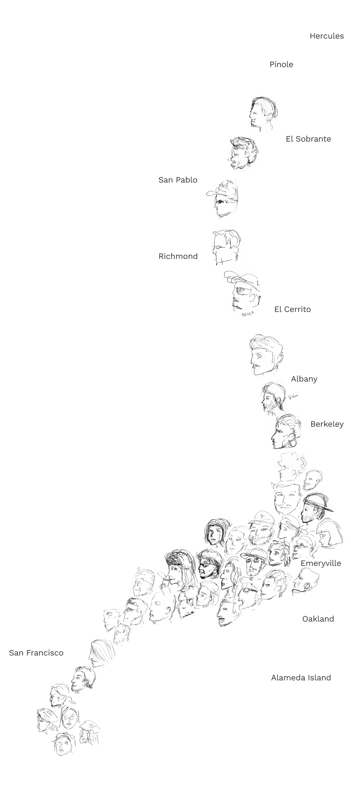

OCTOBER 29, 2015
⦿ In 2011, 37.6 percent of workers in San Francisco County drove to work alone, compared with 76.4 percent nationally.
⦿ Meanwhile, 7.3 percent of San Francisco County workers carpooled in 2011, while 9.7 percent in the nation carpooled to work.
⦿ In 2011, the average one-way commute to work for people living in San Francisco County was 29.6 minutes. The average commute nationally was 25.5 minutes.
⦿ About 10.2 percent of all workers had a commute of 60 minutes or more in 2011, compared with 8.1 percent in the nation as a whole.
Commuter Forecasts for the San Francisco Bay Area 1990-2030
San Francisco / Oakland Bay Bridge (I-80 Westbound and BART Transbay Tube)
START
FINISH
| Year |
1990 |
2000 |
2010 |
2020 |
2030 |
| Total Commmuters |
131,600 |
148,500 |
$183,900 |
$217,700 |
$238,400 |